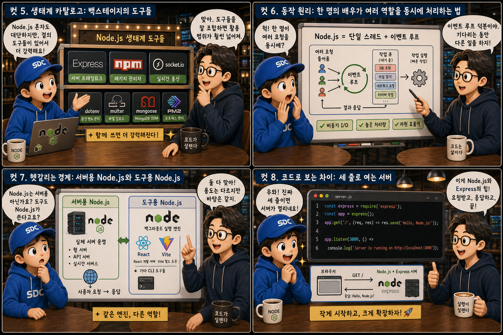

웹 애플리케이션 개발 · 서버 런타임(JavaScript Runtime) · 12컷 이미지 스토리 #22
Node.js, 브라우저 밖에서 실행되는 자바스크립트
같은 배우가 무대 위와 무대 뒤 양쪽에서 연기하듯, 자바스크립트가 브라우저 밖 서버에서도 일하게 된 이야기를 12컷으로 풀어봅니다.
BrowservsNode.js
우리가 브라우저 안에서 당연하게 써온 자바스크립트는 원래 딱 한 곳, 화려한 조명이 켜진 무대 위에서만 움직이도록 태어난 언어였습니다. 그런데 2009년 등장한 Node.js가 이 배우를 무대 밖, 즉 어둡고 실용적인 백스테이지로 데리고 나오면서 이야기가 달라졌습니다. 이 글에서는 같은 배우가 어떻게 무대 위와 무대 뒤 양쪽에서 일할 수 있게 되었는지, 그 원리와 쓰임새를 12컷으로 하나씩 짚어봅니다.
PART 1 / 3 — 하나의 언어, 두 개의 무대 (컷 01–04)
fourcut-01 — 컷 01 ~ 04
컷 01
무대 위 배우가 무대 뒤에서도 일한다면
원래 브라우저 안에서만 실행되던 자바스크립트가, Node.js 덕분에 서버 컴퓨터에서도 그대로 실행될 수 있게 되었다.
자바스크립트는 원래 웹브라우저 안에서만 실행되도록 만들어진 언어였습니다. 버튼을 눌렀을 때 화면이 바뀌는 것 같은 동작을 담당했죠. 그런데 2009년 Node.js가 등장하면서, 같은 자바스크립트 문법으로 브라우저 없이도 컴퓨터, 즉 서버에서 직접 프로그램을 실행할 수 있게 되었습니다. 무대 위에서 노란 조명을 받던 배우가, 무대 뒤 초록빛 백스테이지에서도 똑같은 얼굴로 일하게 된 셈입니다. 지금부터 하나의 언어가 어떻게 무대 위와 무대 뒤 양쪽에서 일할 수 있게 되었는지 열두 장면으로 살펴봅니다.
컷 02
정의부터 명확히: 런타임이라는 무대 장치
Node.js는 브라우저 밖에서도 자바스크립트 코드를 실행할 수 있게 해주는 런타임이며, 이 덕분에 자바스크립트로 서버를 만들 수 있다.
Node.js는 구글 크롬 브라우저에 쓰이는 자바스크립트 엔진 V8을 브라우저 밖으로 꺼내어, 독립된 프로그램으로 만든 결과물입니다. 브라우저는 원래 이 엔진을 이용해 화면 위의 자바스크립트 코드를 해석하고 실행하는데, Node.js는 이 엔진만 따로 떼어내 컴퓨터 어디서든 자바스크립트 파일을 실행할 수 있게 해줍니다. 그 결과 개발자는 브라우저 화면과 서버를 같은 언어인 자바스크립트로 모두 작성할 수 있게 되었습니다.
컷 03
나란히 비교: Node.js와 다른 서버 언어
Node.js로 만든 서버는 Python의 서버 프레임워크들과 목적은 같지만, 사용하는 언어와 생태계가 다르다.
Node.js와 Python 기반 서버(FastAPI, Django 등)는 둘 다 요청을 받아 처리하고 응답을 돌려주는 서버를 만들 수 있다는 점에서 목적이 같습니다. 다만 Node.js는 자바스크립트 문법을 쓰고, 프론트엔드도 자바스크립트(React 등)로 짜여 있는 경우가 많아 언어 하나로 앞뒤를 통일한다는 장점이 있습니다. npm 생태계 위에서 돌아가는 Node.js와 pip 생태계 위에서 돌아가는 Python 서버 중 어떤 프로젝트를 선택하느냐는, 결국 어떤 언어로 통일하고 싶은가, 팀이 어떤 언어에 익숙한가의 문제에 가깝습니다.
컷 04
한 문장으로 정리하면
Node.js는 브라우저의 자바스크립트 엔진을 꺼내어, 서버에서도 자바스크립트를 실행할 수 있게 만든 런타임이다.
BROWSER
무대 위에서만 사는 자바스크립트
NODE.JS
서버에서도 도는 자바스크립트
definition
이 한 문장만 기억해도 왜 자바스크립트 개발자가 프론트엔드뿐 아니라 백엔드까지 같은 언어로 다룰 수 있게 되었는지 이해할 수 있습니다. 브라우저 안에서만 살던 배우가, 이제는 무대 뒤에서도 자유롭게 움직이게 된 것입니다.
PART 2 / 3 — 생태계와 동작 원리 (컷 05–08)

fourcut-02 — 컷 05 ~ 08
컷 05
생태계 카탈로그: 백스테이지의 도구들
Node.js 곁에는 서버 프레임워크 Express, 패키지 관리자 npm, 실시간 통신을 돕는 Socket.io 같은 도구들이 있어 활용 범위를 넓혀준다.
Node.js 자체는 자바스크립트를 실행하는 최소한의 엔진일 뿐이고, 실제 서버를 편하게 만들려면 주변 도구들이 필요합니다. npm은 필요한 라이브러리를 설치해주는 패키지 관리자이고, Express는 요청을 받아 응답하는 서버를 몇 줄 만에 만들 수 있게 해주는 프레임워크입니다. Socket.io는 채팅처럼 실시간으로 데이터를 주고받는 기능을 쉽게 만들어주고, Next.js는 프론트엔드와 백엔드를 한 프로젝트에 담아주며, PM2는 서버가 죽지 않고 계속 돌아가도록 관리해주는 도구입니다.
컷 06
동작 원리: 한 명의 배우가 여러 역할을 동시에 처리하는 법
Node.js는 하나의 스레드로 동작하지만 이벤트 루프라는 구조 덕분에 여러 요청을 기다리는 동안 다른 일을 처리할 수 있다.
요청 도착→이벤트 루프→백그라운드 작업 (I/O)→다음 요청 계속 접수→완료 콜백 처리→응답 전송
사용자가 요청을 보내면 Node.js는 그 요청을 이벤트 루프가 접수합니다. 파일을 읽거나 데이터베이스를 조회하는 것처럼 시간이 걸리는 작업은 일단 백그라운드에 맡겨두고, 그 사이 다음 요청을 먼저 처리한 뒤, 맡겨둔 작업이 끝나면 다시 돌아와 결과를 처리하는 방식입니다. 한 명의 배우가 여러 손님의 주문을 순서대로 접수하면서도, 오래 걸리는 요리는 미리 주방에 넘겨두고 다음 손님을 응대하는 것과 비슷합니다. event loop
컷 07
헷갈리는 경계: 서버용 Node.js와 도구용 Node.js
Node.js는 실제 서버를 운영하는 데도 쓰이지만, React나 Vite 같은 프론트엔드 도구를 실행하기 위한 배경 엔진으로도 쓰인다.
Node.js라는 이름을 들으면 곧바로 ‘서버’를 떠올리기 쉽지만, 실제로는 서버를 운영하는 용도 말고도 훨씬 넓게 쓰입니다. React 프로젝트를 개발할 때 화면을 미리 보여주는 개발 서버나, Vite·Webpack 같은 도구로 코드를 압축하고 번들링하는 과정도 뒤에서는 Node.js가 실행하고 있습니다. 즉, 화면에 보이는 서비스가 자바스크립트로 짜여 있다면 그 뒤에는 거의 항상 Node.js가 어떤 형태로든 관여하고 있다고 보아도 무방합니다. same runtime, different jobs
$ node server.js
> 서버가 3000번 방에서 대기 중
> GET / 200 OK
Node.js와 Express를 함께 쓰면 몇 줄 안 되는 코드만으로 요청을 받아 응답하는 웹 서버를 열 수 있다.
Node.js 위에서 Express라는 프레임워크를 함께 쓰면, require('express')로 도구를 불러오고, app.get(...)으로 어떤 주소에 어떻게 응답할지 정한 뒤, app.listen(3000)으로 서버를 열기까지 단 몇 줄이면 충분합니다. 이렇게 만든 서버는 실제로 3000번 같은 포트에서 요청을 기다리고 있다가, 누군가 접속하면 정해둔 응답을 돌려줍니다. 브라우저에서만 쓰던 익숙한 자바스크립트 문법 그대로 서버까지 만들 수 있다는 점이 Node.js의 가장 큰 매력입니다.
PART 3 / 3 — 실전 감각과 요약 (컷 09–12)
fourcut-03 — 컷 09 ~ 12
컷 09
흔한 실수: 오래 걸리는 일을 무대 위에서 그대로 붙잡고 있는 것
시간이 오래 걸리는 작업을 이벤트 루프를 막는 방식으로 처리하면, 그 사이 다른 모든 요청이 함께 멈춰버리는 문제가 생긴다.
⚠ blocking the event loop
Node.js는 한 번에 한 가지만 처리하는 단일 스레드로 동작하기 때문에, 어떤 코드가 아주 오래 걸리는 계산을 ‘기다리는 방식’으로 처리해버리면 그 사이 다른 모든 요청도 함께 멈춰버립니다. 무거운 짐을 배우 혼자 낑낑대며 드는 동안, 뒤에 줄 선 손님들은 전부 그대로 멈춰 서 있는 것과 같습니다.
✓ use async / non-blocking
그래서 파일 읽기, 데이터베이스 조회, 외부 API 호출처럼 시간이 걸리는 작업은 결과를 기다리는 동안 다른 일도 처리할 수 있는 비동기(async) 방식으로 작성하는 것이 Node.js에서 특히 중요합니다. 무거운 일은 별도의 짐꾼에게 넘기고, 배우는 계속 다음 손님을 받아야 합니다.
문제가 생기는 지점은 언제나 같습니다 — 오래 걸리는 일을 붙잡고 놓아주지 않는 코드. 무거운 일은 항상 따로 맡기고, 무대 위의 배우는 다음 손님을 받으러 움직여야 합니다.
컷 10
트레이드오프 비교표: 배우의 강점과 한계
동시 접속 처리, 언어 통일성, 무거운 연산 처리라는 축에서 Node.js는 뚜렷한 장단점을 가진다.
great at juggling, not built for heavy lifting
비교 축
Node.js
무거운 연산 특화 언어들
가벼운 동시 접속 처리
여러 창구를 빠르게 오가며 처리
한 창구씩 천천히 처리
언어 통일성 (프론트+백)
같은 언어로 앞뒤를 통일
프론트와 다른 언어 사용
무거운 계산 처리
단일 스레드라 부담 (약함)
전용 처리로 여유 (강함)
Node.js는 채팅, 알림, 실시간 대시보드처럼 짧은 요청이 아주 많이 몰리는 상황을 가볍게 처리하는 데 강점이 있고, 프론트엔드와 같은 자바스크립트 언어를 쓸 수 있어 팀 전체의 언어를 통일하기 좋습니다. 반면 이미지 처리나 복잡한 수치 연산처럼 CPU를 오래 붙잡는 무거운 작업에는 단일 스레드 구조가 오히려 발목을 잡을 수 있어, 이런 영역은 다른 언어나 별도의 처리 방식과 함께 쓰이는 경우가 많습니다.
컷 11
실전 팁: 서버가 꺼지지 않게 지켜보기
개발 중에는 코드가 바뀔 때마다 서버를 자동으로 재시작해주는 nodemon 같은 도구를, 운영 중에는 서버가 죽으면 다시 살려주는 PM2 같은 도구를 쓰는 것이 실전에서 유용하다.
🛠 개발 중 → nodemon
코드가 바뀌면 자동 재시작
서버를 직접 껐다 켤 필요 없음
빠른 피드백 루프
🛠 운영 중 → PM2
서버가 죽으면 즉시 재시작
로그를 주기적으로 확인
서비스 중단 시간 최소화
개발하는 동안 코드를 고칠 때마다 서버를 직접 껐다 켜는 것은 번거로우므로, nodemon 같은 도구를 쓰면 파일이 저장될 때마다 서버가 자동으로 재시작됩니다. 실제로 서비스를 운영할 때는 예기치 못한 오류로 서버 프로세스가 죽는 경우가 있는데, PM2 같은 프로세스 관리 도구를 쓰면 서버가 꺼지자마자 자동으로 다시 켜주어 서비스 중단 시간을 최소화할 수 있습니다. 무대의 조명이 꺼지지 않도록 뒤에서 계속 지켜보는 관리자를 두는 셈입니다.
컷 12
판별법과 핵심 요약: 같은 배우, 다른 무대
브라우저 안에서 실행되면 그냥 자바스크립트이고, 브라우저 없이 컴퓨터에서 직접 실행되면 그것은 Node.js 위에서 돌아가는 것이다.
가장 간단한 판별법은 이것입니다. 자바스크립트 코드가 브라우저 화면 안에서 돌아가고 있다면 그냥 자바스크립트이고, 브라우저 없이 터미널에서 node server.js처럼 실행되고 있다면 그것은 Node.js 위에서 돌아가는 것입니다. 같은 배우가 무대 위에서는 화면을 꾸미고, 무대 뒤에서는 요청을 받아 응답을 만드는 것처럼, 하나의 언어가 프론트엔드와 백엔드 양쪽에서 일할 수 있게 된 것이 Node.js가 가져온 가장 큰 변화입니다.
브라우저의 엔진을 꺼내온 것서버도 자바스크립트로이벤트 루프로 동시 처리무거운 일은 비동기로서버 도구로도 쓰인다판별법: 브라우저 없이 실행되면 Node.js
하나의 언어, 두 개의 무대
자바스크립트는 무대 위에서 화면을 그리고, Node.js는 무대 뒤에서 데이터를 처리하며 그 화면에 필요한 응답을 돌려줍니다. 조명이 켜진 무대와 불이 꺼지지 않는 백스테이지처럼, 같은 배우가 두 장소에서 각자의 역할을 다하며 하나의 애플리케이션을 완성합니다.